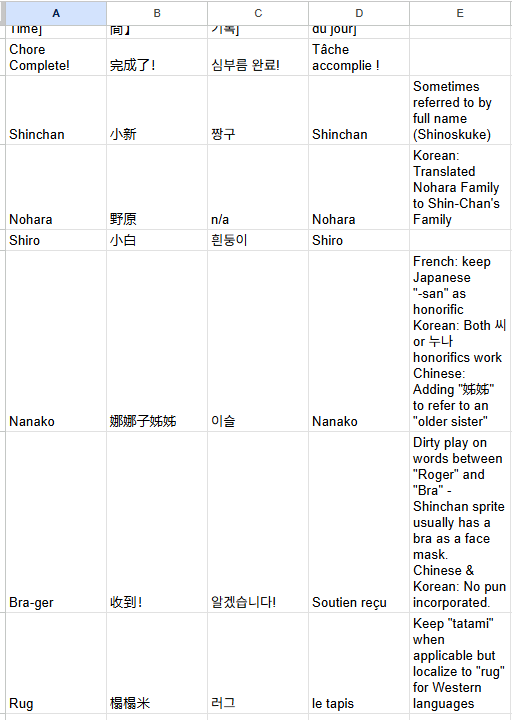

About the Translation Technology Course
This project was completed as part of a Translation Technology course,
which focused on the tools, workflows, and technical decision-making that support
professional localization projects.
Throughout the course, I worked extensively with CAT tools, primarily
Trados Studio, while also gaining exposure to tools such as
MateCat, AntConc, and other corpus and QA utilities.
The course emphasized not only how to use these tools, but why and when
they are most effective within a localization pipeline.
Key areas of focus included building and managing
translation memories, glossaries,
termbases, and style guides, as well as preparing
accurate quotes and Statements of Work based on scope, volume,
and technical complexity.
We also explored the evolving role of machine translation and AI
in the industry—examining when MT can improve efficiency, when human expertise is
essential, and how post-editing and QA practices help maintain quality and consistency.
This final project applies those concepts in a real-world scenario, demonstrating how
translation technology, linguistic expertise, and project planning come together in
a structured localization workflow.
For this project, I localized the mobile game Crayon Shin-chan: Little Helper
with the goal of ensuring that players across regions could engage with the game
naturally, intuitively, and joyfully in their own language.
The project involved translating all user-facing content from English into
Korean, French, and Traditional Chinese, using
Trados Studio as the backbone of the technical and linguistic workflow.
From early preparation—file validation, segmentation rules, and translation memory setup—
to production and final QA, each phase was designed to reduce risk, maintain consistency,
and support high-quality multilingual output.
Below is a breakdown of the localization process, supported by examples from each phase,
as well as the full Statement of Work and a summary of lessons learned.
Statement of Work
Localization Process Highlights

Pseudo-translation used to validate segmentation, placeholders, and string expansion.

Translation of user-facing strings in Trados using TM matches, QA checks, and concordance search. LQA was conducted for all locales.
DTP recreation of assets with embedded text across Korean, French, and Traditional Chinese.

Project glossary ensuring consistent terminology across all languages.
Tips & Tricks: Using Regex in Localization
Using Regex to Improve Linguistic Quality at Scale
One of the most valuable technical skills I applied during this project was the use of
regular expressions (regex) to perform targeted linguistic checks across
a large volume of user-facing strings. Regex allowed me to efficiently identify
inconsistencies that would be difficult to catch manually.
Below is a reference document showcasing how I have used regex in previous coursework
to solve localization challenges.
In this project, regex was especially useful in my role as the French linguist,
where typographic conventions and register play a critical role in perceived quality.
Practical Regex Examples
1. Enforcing insecable (non-breaking) spaces before punctuation
([^\s\u00A0])([!?])
Used to identify cases where ! or ? were missing the required
non-breaking space in French (e.g., Bonjour! → Bonjour !).
2. Checking for unintended informal phrasing
\b(tu|toi|ton|ta|tes)\b
Used to scan for informal second-person pronouns to ensure consistent use of
the intended register across instructional UI strings.
3. Identifying inconsistent punctuation patterns
\s{2,}|[!?]{2,}
Used to flag double spaces or repeated punctuation that can easily slip into
short UI strings during editing.
By combining regex searches with Trados Studio's QA Checker and concordance search,
I was able to validate French typographic rules, enforce stylistic consistency,
and significantly reduce review time. This reinforced how technical tools and
linguistic expertise work best when used together in a modern localization workflow.